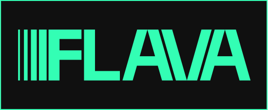
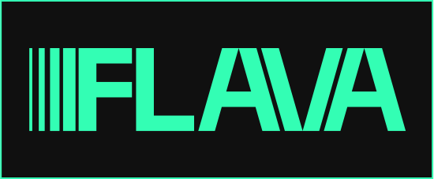

Стайлгайд
О бренде
Концепция
Уникальный медиа-сервис о моде в музыке. Бренд стремится подчеркнуть важную роль визуальной составляющей в музыкальной индустрии, акцентируя внимание на индивидуальности артистов, а также сблизить слушателей с их любимыми исполнителями.
Ценности
Внимание к разнообразию творчества музыкантов и признание их как межпредметных артистов
Ценность визуальной культуры как неотъемлемой составляющей музыкальной
Уважение интереса пользователей к личности исполнителей
Достоверность информации
Миссия
Показать ценность визуального в музыке и сделать исполнителей и слушателей ближе друг к другу
Айдентика
Метафорой айдентики является звучание образов и стиля одежды музыкальных исполнителей. Ведущий мотив — взаимодействие графики эквалайзера и фотографий, музыкального и визуального. Главным элементом композиции являются фотографии, поэтому графика и типографика имеют четкую и лаконичную структуру и располагаются по простой сетке, основанной на сетке эквалайзера.
Логотип
Значение
Болдовое начертание и строгая геометрия

Надёжность бренда, влиятельность и масштабность музыкальной индустрии
Вертикальные линии в начале
Символ звука и движения, динамичность и прогрессивность бренда, связь с музыкой
Построение и механика
Ширина линий в начале логотипа увеличивается, а расстояние между ними уменьшается. Расстояние между буквами одинаковое, наклоны элементов букв совпадают.

Охранное поле

Использование
Используется во всех носителях. Всегда занимает 1 колонку. Может выполнять роль графики и занимать 4 колонки в мелких печатных и веб—носителях. Минимальный размер —
Знак
Используется отдельно от текстового блока, если носитель не вмещает логотип, и в мерче. Допускается масштабирование знака по высоте одной строки.
Неправильное использвание
Искажение пропорций

Вращение

Использование в качестве контейнера для фото

Добавление дополнительной графики
Цвета
Выбор цветов
Цветовая палитра вдохновлена яркими и контрастными цветами эквалайзера.


Цветовые пары

 



Недопустимые сочетания цветов


Типографика
Шрифт
Мягкий округлый гротеск с открытой аппертурой используется для контраста с геометричной и резкой графикой.
PP Pangram Sans
Tracking
Аа Бб Вв Гг Дд Ее Ее Жж Зз Ии Ии Кк Лл Мм Нн Оо Пп Рр Сс Тт Уу Фф Хх Цц Чч Шш Шш Ьь Ьь Ьь Ээ Юю Яя
PP Pangram Sans
SemiBold
Tracking
Аа Бб Вв Гг Дд Ее Ее Жж Зз Ии Ии Кк Лл Мм Нн Оо Пп Рр Сс Тт Уу Фф Хх Цц Чч Шш Шш Ьь Ьь Ьь Ээ Юю Яя
Размер
Заголовок
3x
Подзаголовок
2x
Основной текст
x
Сетка
Построение сетки
4×4
margin = gutter = 0.025 width
Выбор простой сетки связан с применением композиционных схем, в которых главную роль играют фотографии и должны соблюдаться условия, при которых типографика и графика не пересекаются.
Текстовые блоки выстраиваются согласно сетке. Допускается нарушение сетки строк при перемещении текстовых блоков, связанных с заголовоком по смыслу. Тогда расстояние между текстовыми блоками определяется высотой строчной буквы заголовка × 2.
Композиционные
схемы
Квадратный формат
Допускается масштабирование знака по высоте одной строки.

Вертикальный формат
Поле для фото или графики
занимают 2–3 строки сверху.
Типографическое поле
занимает 1–2 строки снизу


Горизонтальный формат
Поле для фото или графики
занимают 2–3 колонки справа.
Типографическое поле
занимает 1–2 колонки слева.
Поле для графики может
занимать 3 строки сверху,
а типографическое 1 снизу.